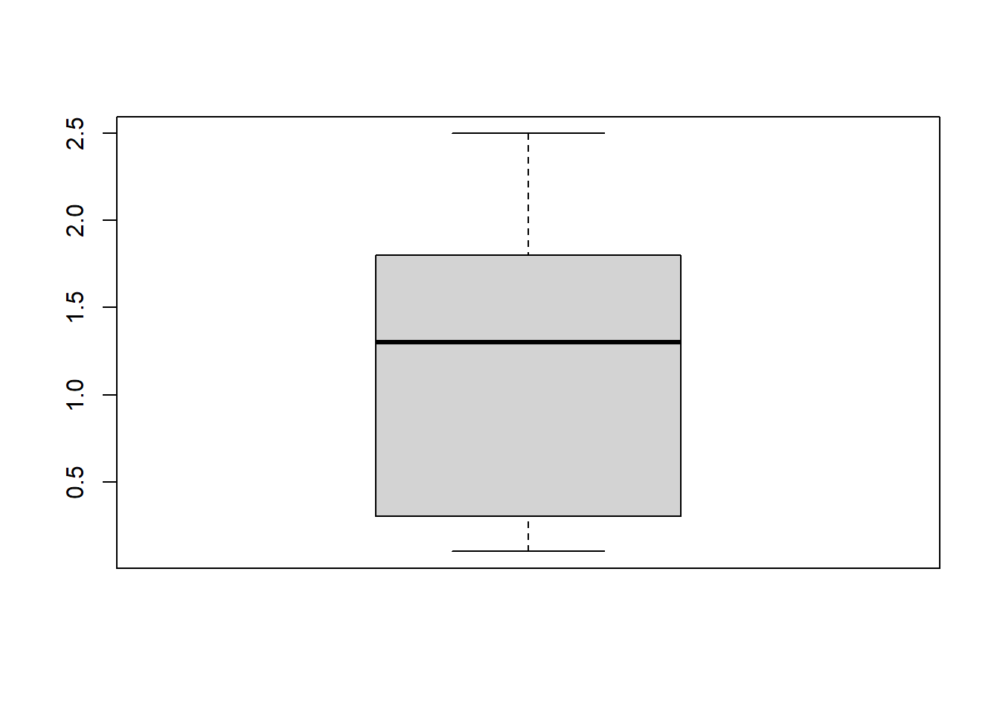

10 Explore os seus dados
Existem dois grandes motivos para você explorar os seus dados antes de realmente começar uma análise mais profunda:
Conhecer um pouco mais dos dados que você irá trabalhar. Isso pode te ajudar a eliminar conceitos formados simplesmente pelo achismo e realmente começar a analisar os números. Ao explorar e conhecer melhor os dados, você também estará mais familiarizado com os dados e será mais fácil planejar ou, quando necessário, adaptar o seu projeto.
Verificar possíveis erros ou valores inconsistentes nos seus dados. É nessa fase de análise exploratória que você irá descobrir caso seus dados possuam valores ilógicos ou caso a sua variável numérica esteja classificada como texto, o que iria te impedir de realizar cálculos com ela.
Nesse capítulo irei mostrar os principais passos de uma Análise Exploratória.
Primeiramente, você deve ler os seus dados no RStudio. Como esse passo já foi explicado no Capítulo 5, vamos pular essa parte.
Vamos trabalhar com um dataset bem conhecido na Ciência de Dados, seu nome é iris. O dataset possui as medidas de 150 flores pertencentes a 3 diferentes espécies.
Para explicar um pouco sobre o Dataset, já vou usar uma função que pode ser utilizada na sua exploração: a função names().
Usamos essa função para conhecer os nomes das variáveis (colunas) do dataset.
10.1 Nome das colunas
## [1] "Sepal.Length" "Sepal.Width" "Petal.Length" "Petal.Width" "Species"A primeira coluna representa o comprimento da sépala da flor (“Sepal.Length”), já a segunda coluna é largura da sépala (“Sepal.Width”).
A terceira coluna mostra o valor do comprimento da pétala (“Petal.Length”) e a quarta a largura da pétala (“Petal.Width”).
A última coluna indica qual a espécie da flor.
10.2 Estrutura do Dataset
Possivelmente este será o primeiro comando que você irá executar ao receber um dataset novo str(). A função str() mostra qual a estrutura de um objeto.
## 'data.frame': 150 obs. of 5 variables:
## $ Sepal.Length: num 5.1 4.9 4.7 4.6 5 5.4 4.6 5 4.4 4.9 ...
## $ Sepal.Width : num 3.5 3 3.2 3.1 3.6 3.9 3.4 3.4 2.9 3.1 ...
## $ Petal.Length: num 1.4 1.4 1.3 1.5 1.4 1.7 1.4 1.5 1.4 1.5 ...
## $ Petal.Width : num 0.2 0.2 0.2 0.2 0.2 0.4 0.3 0.2 0.2 0.1 ...
## $ Species : Factor w/ 3 levels "setosa","versicolor",..: 1 1 1 1 1 1 1 1 1 1 ...Então, de forma simples, podemos ver que temos um data frame com 150 observações e 5 variáveis.
Além disso, já sabemos que as 4 primeiras variáveis são numéricas (num) e a variável Species é categórica (Factor) e possui 3 diferentes categorias (Factor w/ 3 levels).
10.3 O começo e o final do seu conjunto de dados
Se tiver algum problema na importação dos seus dados para o R/Rstudio, é bem provável que você consiga notar isso avaliando as primeiras ou as últimas linhas de seu conjunto de dados.
## Sepal.Length Sepal.Width Petal.Length Petal.Width Species
## 1 5.1 3.5 1.4 0.2 setosa
## 2 4.9 3.0 1.4 0.2 setosa
## 3 4.7 3.2 1.3 0.2 setosa
## 4 4.6 3.1 1.5 0.2 setosa
## 5 5.0 3.6 1.4 0.2 setosa
## 6 5.4 3.9 1.7 0.4 setosa## Sepal.Length Sepal.Width Petal.Length Petal.Width Species
## 145 6.7 3.3 5.7 2.5 virginica
## 146 6.7 3.0 5.2 2.3 virginica
## 147 6.3 2.5 5.0 1.9 virginica
## 148 6.5 3.0 5.2 2.0 virginica
## 149 6.2 3.4 5.4 2.3 virginica
## 150 5.9 3.0 5.1 1.8 virginica10.4 Frequência
A frequência é utilizada para conhecer melhor as variáveis categóricas. Porém, também é muito importante para encontrar erros em nossos dados.
Para encontrar erros utilizando a frequência, pressupõe-se que você tenha algum conhecimento prévio dos dados e possa assim identificar frequências discrepantes em alguma categoria. Também pode ser o caso de notar que uma das categorias deveria estar em seu conjunto de dados e não está.
Primeiramente, iremos utilizar a função table() para calcular a frequência de cada categoria da variável Species.
##
## setosa versicolor virginica
## 50 50 50A frequência também pode ser calculada utilizando o pacote dplyr:
##
## Attaching package: 'dplyr'## The following objects are masked from 'package:stats':
##
## filter, lag## The following objects are masked from 'package:base':
##
## intersect, setdiff, setequal, union## Species n
## 1 setosa 50
## 2 versicolor 50
## 3 virginica 50Caso não se lembre do operador pipe (%>%), releia a última parte do Capítulo de Manipulação de Dados com o dplyr - Capítulo 7.
10.5 Estatísticas descritivas básicas
A frequência mostrada no item anterior é útil para variáveis categóricas. Porém, para variáveis numéricas, faz muito mais sentido que se calcule algumas estatísticas básicas.
Repito, essa exploração tem dois objetivos: conhecer melhor os seus dados e prevenir que o conjunto de dados tenha algum valor discrepante que seja totalmente ilógico (ou seja, um erro).
As variáveis numéricas do conjunto de dados iris são: Sepal.Length, Sepal.Width, Petal.Length e Petal.Width.
As estatísticas básicas podem ser simplesmente calculadas pela função summary
## Sepal.Length Sepal.Width Petal.Length Petal.Width
## Min. :4.300 Min. :2.000 Min. :1.000 Min. :0.100
## 1st Qu.:5.100 1st Qu.:2.800 1st Qu.:1.600 1st Qu.:0.300
## Median :5.800 Median :3.000 Median :4.350 Median :1.300
## Mean :5.843 Mean :3.057 Mean :3.758 Mean :1.199
## 3rd Qu.:6.400 3rd Qu.:3.300 3rd Qu.:5.100 3rd Qu.:1.800
## Max. :7.900 Max. :4.400 Max. :6.900 Max. :2.500
## Species
## setosa :50
## versicolor:50
## virginica :50
##
##
## Portanto, a função retornou as seguintes estatísticas para as variáveis numéricas:
- Valor mínimo
- 1º quartil (Valor que é maior do que 25% dos dados e menor do que os 75% restantes)
- Mediana (Valor que é maior que 50% dos dados e menor do que os 50% restantes)
- Média
- 3º quartil (Valor que é maior do que 75% dos dados e menor do que os 25% restantes)
- Valor máximo
Para a variável categórica Species, foram retornadas as frequências de cada categoria.
10.6 Gráficos usados na Análise Exploratória
Existem dois gráficos muito comuns para explorar uma variável e visualizar a distribuição de seus dados:
- Histograma
- BoxPlot
10.6.1 Histograma
O Histograma é um gráfico de frequência e mostra onde há maior concentração de valores.
Esse é o histograma para a variável Sepal.Length:

10.6.2 Boxplot
O Boxplot (ou gráfico de caixa) representa graficamente o valor mínimo, o 1º quartil, a media, o 3º quartil e o valor máximo de uma variável.
Esse é o Boxplot para a variável Petal.Width:
